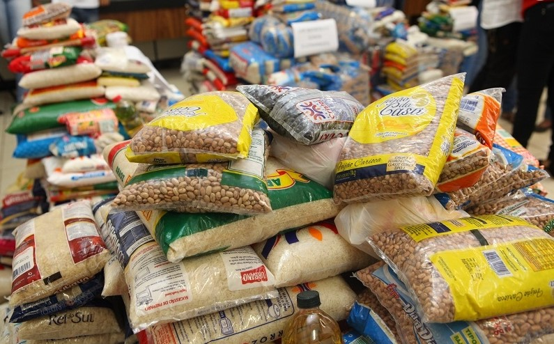

A doação de alimentos é uma prática que visa combater problemas sociais como a fome e a insegurança alimentar. Este tipo de doação pode ser realizada em larga escala, com o trabalho de instituições de cunho social, ou em pequena escala, com a doação de alimentos de pequenos grupos voluntários ou uma única pessoa.
Elas são importantesno Brasil pois irrefutavelmente, as políticas públicas de forma isolada não conseguem atingir todos os brasileiros que passam fome e vivem na insegurança alimentar, por isso, a doação de alimentos destaca-se como importante meio para auxiliar as políticas públicas e efetivar o direito fundamental à alimentação.
Existem diversas formas que inventaram para praticar a doação de alimentos, como;
O Programa Banco de Alimentos é um projeto criado pelo governo federal com intuito de auxiliar pessoas em situação de insegurança alimentar. Eles são estruturas físicas e/ou logísticas que ofertam serviço de captação, recepção e distribuição gratuita de gêneros alimentícios oriundos de doações de setores privados ou públicos.
Essa doação de alimentos é destinada a instituições sociais que atendem um público em situação de alta vulnerabilidade social. Para que esses locais recebam a doação de alimentos, eles precisam passar por uma regulamentação da Rede Brasileira de Bancos de Alimentos – RBBA.
O intuito dessa instituição é promover a doação de alimentos adequados e saudáveis e a valorização dos hábitos alimentares regionais. Além de beneficiarem pessoas que sofrem com a insegurança alimentar, os bancos de alimentos ajudam grandes empresas do ramo a reduzirem seus desperdícios alimentares.